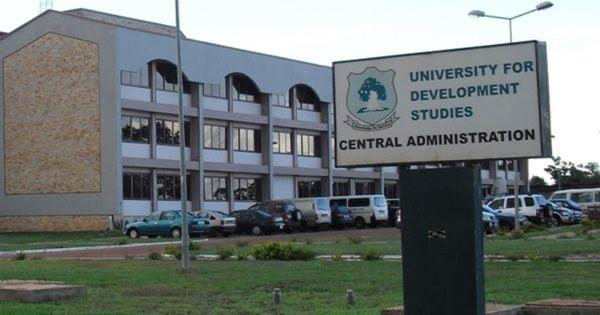
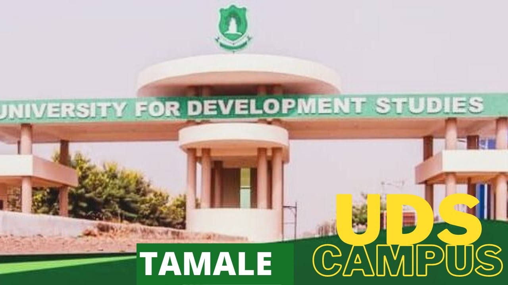

YOU ARE HIGHLY WELCOME TO MY SITE AND DO NOT FORGET TO CLICK THE SUBSCRIBE BUTTON
This is my first time to code a website so please don't expect much from this site but anyways how far with the site
THIS INFORMATION IS ABOUT THE UNIVERSITY THAT AM CURRENTLY IN
The University for Development Studies, Tamale was established in 1992 by the government of Ghana with a view to accelerating the development of the then 3 Northern Regions of Ghana. Wikipedia
Address: Unnamed Road, Tale
Hours:
Open ⋅ Closes 4 pm
Phone: 054 544 7445
Founded: 1992
Subsidiaries: University for Development Studies, Wa, MORE
Motto: Knowledge for Service
Vice-chancellor: Gabriel Ayum Teye
Colors: Black, White, Green
School type: Public universityThe University for Development Studies (UDS) is Ghana’s first public University in the North. It was established by the Government of Ghana by PNDC Law 279 and gazette on 15th May, 1992 with aims:
to provide higher education to all persons suitably qualified and capable of benefiting from such education;
to undertake research and promote the advancement and dissemination of knowledge and its application to the needs and aspirations of the people of Ghana; and
to blend the academic world with that of the community in order to provide constructive interaction between the two for the total development of northern Ghana in particular and the country as a whole.
The pedagogical philosophy of UDS is said to have been borne out of a new thinking in higher education emphasizing the need for universities as teaching and research institutions to play more active role in addressing societal problems (especially rural areas) for speedy development.
The University by its mandate and constituency has a pro-poor focus and this is reflected in its methodology of teaching, research and outreach services. The specific emphasis on practically-oriented, research and field-based training is aimed at contributing towards poverty reduction in order to accelerate national development.
As a national University, its uniqueness is based on the following:
Its location and multi-campus system.
Its vision and pro-poor nature which aims at addressing the conditions and structural causes of poverty.
Its community-technical-interface programme which combines academic work and community-based field practical works known as the Third Trimester Field Practical Programme (TTFPP) and Community Based Education and Service (COBES).
The University began academic work in September 1993 with the admission of its first batch of forty (40) students into the Faculty of Agriculture (FoA). Other faculties, schools, institutes, etc were phased-in gradually from 1994 to date. Currently, the University has six (6) Schools, six (6) Faculties, three (3) Institutes and 4 Centers (including two Centers of Excellence).
The University operates a multi-campus system:
Campus – Central Administration,
School of Medicine (SoM), School of Allied Health Sciences (SAHS), School of Nursing and Midwifery (SoNM), School of Public Health (SPH) and Faculty of Education (FoE) and Desert Research Institute (DRI)

Nyankpala Campus
– Faculty of Agriculture, Food and Consumer Sciences (FoAFCS), Faculty of Natural Resources and Environment (FNRE), Faculty of Biosciences (FoB), School of Engineering (SoE), West
African Centre for Water, Irrigation and Sustainable Agriculture (WACWISA) and West African Centre for Sustainab
Tamale City Campus
– - Graduate School, Institute of Interdisciplinary Research (IIR), Institute of Distance and Continuing Education (IDCE), Colleges of Education Affiliation and Business Innovation and Incubation Centre (BIIC)
\
Tamale North Campus – School of Applied Economics and Management Sciences (SAEMS)

Campus, Yendi\
–
Faculty of Communication and Cultural Studies (FCCS) and Faculty of Sustainable Development Studies (FoSDS), Centre for Culture, Heritage and African Studies (CCHAS) and Centre for Peace and Security Studies (CePSS).
The oldest Faculty of the University remains the Faculty of Agriculture, Food and Consumer Sciences (FoAFCS). The University currently runs both graduate and undergraduate programmes at the various campuses as well as community-outreach activities and research programmes geared towards creating an enabling environment for sustainable community development and economic growth.
The University’s Directorate of Community Relations and Outreach Programmes (DCROP) has the mandate of rolling-out its community-technical-interface programme which includes TTFPP, COBES, Teaching Practice and a Homestay Programme for international students.
https://www.uds.edu.gh/about/
UNIVERSITY FOR DEVELPMENTAL STUDIES
A LOOK AT UDS MAIN CAMPUS, WOW SO EXCITING RIGHT, COME ON WATCH TILL THE END


.jpg)